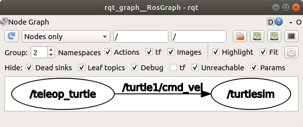
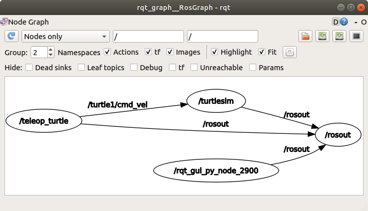
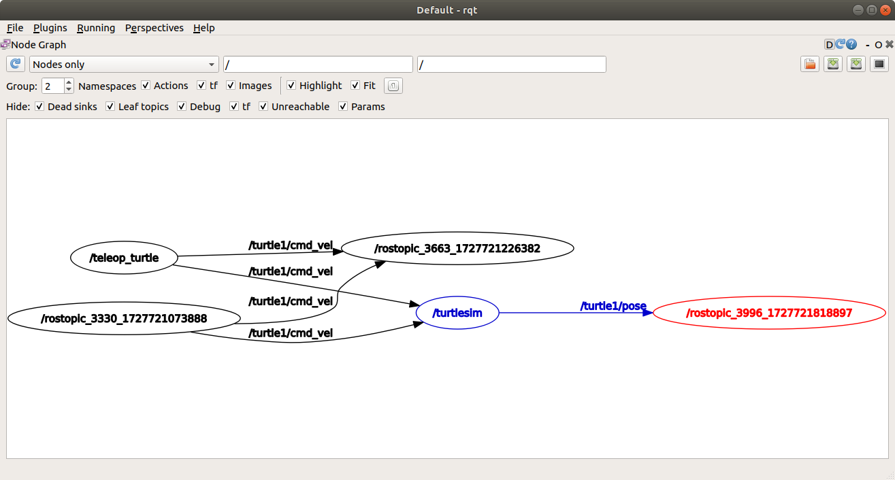
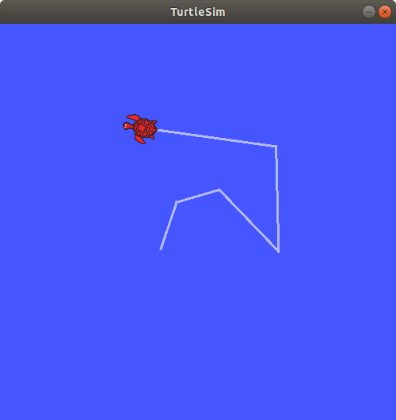
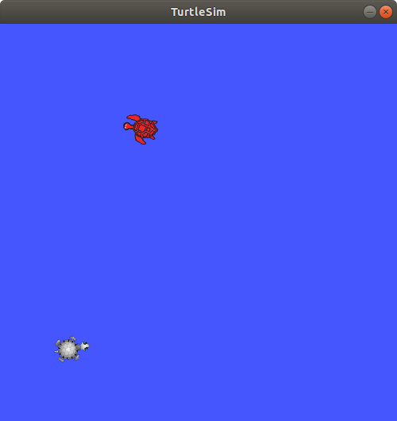
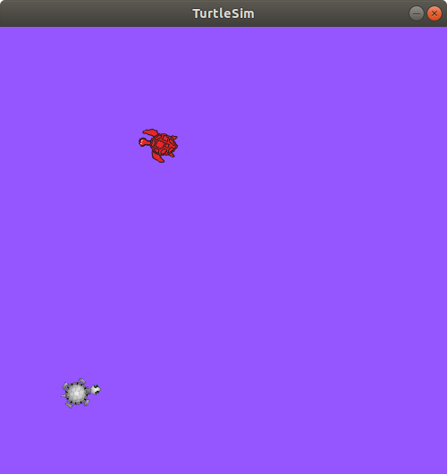

Lab 2 : ROS Nodes, Topics, Services, Parameters, Actions
Seneca Polytechnic SEA700 Robotics for Software Engineers
Introduction
A overview of some computation graph concepts: - Node: an executable representing an individual ROS software process - Topic: nodes can publish messages to a topic and/or subscribe to a topic to receive messages - Message: a ROS datatype used to exchange data between nodes
Nodes in ROS
Each node in ROS should be responsible for a single, modular purpose, ie. controlling the wheel motors or publishing the sensor data from a laser range-finder. Each node can send and receive data from other nodes via topics, services, actions, or parameters. A full robotic system is comprised of many nodes working in concert.

Figure 2.1 ROS Nodes Graph
Topics in ROS
ROS 2 breaks complex systems down into many modular nodes. Topics are a vital element of the ROS graph that act as a bus for nodes to exchange messages.

Figure 2.2 ROS Topic Graph
A node may publish data to any number of topics and simultaneously have subscriptions to any number of topics.

Figure 2.3 ROS Topic Graph (One-to-Many)
Topics are one of the main ways in which data is moved between nodes and therefore between different parts of the system.
Service in ROS
Services are another method of communication for nodes in the ROS graph. Services are based on a call-and-response model versus the publisher-subscriber model of topics. While topics allow nodes to subscribe to data streams and get continual updates, services only provide data when they are specifically called by a client.

Figure 2.4 ROS Service Single Node

Figure 2.5 ROS Service Multiple Node
Parameter in ROS
A parameter is a configuration value of a node. You can think of parameters as node settings. A node can store parameters as integers, floats, booleans, strings, and lists. In ROS 2, each node maintains its own parameters.
Actions in ROS
Actions are one of the communication types in ROS 2 and are intended for long running tasks. They consist of three parts: a goal, feedback, and a result.
Actions are built on topics and services. Their functionality is similar to services, except actions can be canceled. They also provide steady feedback, as opposed to services which return a single response.
Actions use a client-server model, similar to the publisher-subscriber model. An “action client” node sends a goal to an “action server” node that acknowledges the goal and returns a stream of feedback and a result.

Figure 2.6 ROS Action
Procedures
Understanding ROS Nodes
-
Open a terminal to run turtlesim. The command
ros2 run <package_name> <executable_name>launches an executable from a package. We need the package name to beturtlesimand the executable name to beturtlesim_node.ros2 run turtlesim turtlesim_node -
To find the node names, the
ros2 node listcan be used.ros2 node listwill show you the names of all running nodes. This is especially useful when you want to interact with a node, or when you have a system running many nodes and need to keep track of them.Open a new terminal while
/turtlesimis still running and enter the following command:ros2 node listThe terminal will return the node name:
/turtlesim -
Open another new terminal and start the teleop node with the command:
ros2 run turtlesim turtle_teleop_key -
Return to the terminal where you ran
ros2 node listand run it again. You will now see the names of two active nodes:/turtlesim /teleop_turtle -
Remapping allows you to reassign default node properties, like node name, topic names, service names, etc., to custom values. Let’s open another
/turtlesimnode and reassign the name to/my_turtle. In a new terminal, run the following command:ros2 run turtlesim turtlesim_node --ros-args --remap __node:=my_turtle -
Return to the terminal where you ran
ros2 node list, and run it again, you will see three node names:/my_turtle /turtlesim /teleop_turtle -
To access more information about a node, use the following command:
ros2 node info <node_name>. To examine your latest node,my_turtle, run the following command:ros2 node info /my_turtleros2 node inforeturns a list of subscribers, publishers, services, and actions. i.e. the ROS graph connections that interact with that node. The output should look like this:/my_turtle Subscribers: /parameter_events: rcl_interfaces/msg/ParameterEvent /turtle1/cmd_vel: geometry_msgs/msg/Twist Publishers: /parameter_events: rcl_interfaces/msg/ParameterEvent /rosout: rcl_interfaces/msg/Log /turtle1/color_sensor: turtlesim/msg/Color /turtle1/pose: turtlesim/msg/Pose Service Servers: /clear: std_srvs/srv/Empty /kill: turtlesim/srv/Kill /my_turtle/describe_parameters: rcl_interfaces/srv/DescribeParameters /my_turtle/get_parameter_types: rcl_interfaces/srv/GetParameterTypes /my_turtle/get_parameters: rcl_interfaces/srv/GetParameters /my_turtle/list_parameters: rcl_interfaces/srv/ListParameters /my_turtle/set_parameters: rcl_interfaces/srv/SetParameters /my_turtle/set_parameters_atomically: rcl_interfaces/srv/SetParametersAtomically /reset: std_srvs/srv/Empty /spawn: turtlesim/srv/Spawn /turtle1/set_pen: turtlesim/srv/SetPen /turtle1/teleport_absolute: turtlesim/srv/TeleportAbsolute /turtle1/teleport_relative: turtlesim/srv/TeleportRelative Service Clients: Action Servers: /turtle1/rotate_absolute: turtlesim/action/RotateAbsolute Action Clients: -
Run the same comand on the
/teleop_turtlenode and see the difference.
Understanding ROS Topics
-
Close the
/my_turtleterminal so only the/turtlesimand/teleop_turtleare open. -
We will use
rqt_graphto visualize the changing nodes and topics, as well as the connections between them. Open a new terminal and enter the command:rqt_graphYou can also open rqt_graph by opening
rqtand selecting Plugins > Introspection > Node Graph.
Figure 2.7 ROS rqt_graph
You should see the above nodes and topics, as well as two actions around the periphery of the graph (let’s ignore those for now). If you don't see the the nodes and topics, change the setting to Nodes/Topics (active) and click the refresh button. If you hover your mouse over the topic in the center, you’ll see the color highlighting like in the image above.
The graph shows how the
/turtlesimnode and the/teleop_turtlenode are communicating with each other over a topic. The/teleop_turtlenode is publishing data (the keystrokes you enter to move the turtle around) to the/turtle1/cmd_veltopic, and the/turtlesimnode is subscribed to that topic to receive the data.The highlighting feature of rqt_graph is very helpful when examining more complex systems with many nodes and topics connected in many different ways.
rqt_graph is a graphical introspection tool. Now we’ll look at some command line tools for introspecting topics.
-
Open another terminal and run the
ros2 topic listcommand to return a list of all the topics currently active in the system:/parameter_events /rosout /turtle1/cmd_vel /turtle1/color_sensor /turtle1/pose -
Running the code with an additional argument
ros2 topic list -twill return the same list of topics, this time with the topic type appended in brackets:/parameter_events [rcl_interfaces/msg/ParameterEvent] /rosout [rcl_interfaces/msg/Log] /turtle1/cmd_vel [geometry_msgs/msg/Twist] /turtle1/color_sensor [turtlesim/msg/Color] /turtle1/pose [turtlesim/msg/Pose]These attributes, particularly the type, are how nodes know they’re talking about the same information as it moves over topics.
If you’re wondering where all these topics are in rqt_graph, you can uncheck all the boxes under Hide:

Figure 2.8 ROS rqt_graph with everything unhidden
-
To see the data being published on a topic, use:
ros2 topic echo <topic_name>. Since we know that/teleop_turtlepublishes data to/turtlesimover the/turtle1/cmd_veltopic, let’s useechoto introspect that topic:ros2 topic echo /turtle1/cmd_velReturn to the terminal where
turtle_teleop_keyis running and use the arrows to move the turtle around. Watch the terminal where yourechois running at the same time, and you’ll see position data being published for every movement you make:linear: x: 2.0 y: 0.0 z: 0.0 angular: x: 0.0 y: 0.0 z: 0.0 --- -
Return to rqt_graph and unhide the Debug box, hide everything else, then refresh.

Figure 2.9 ROS rqt_graph with debug node
A new node
/_ros2cli_XXXXXis created by theechocommand we just ran (the number might be different). Now you can see that the publisher is publishing data over thecmd_veltopic, and two subscribers are subscribed to it. -
Nodes send data over topics using messages. Publishers and subscribers must send and receive the same type of message to communicate. The topic types we saw earlier after running
ros2 topic list -tlet us know what message type is used on each topic. Recall that thecmd_veltopic has the typegeometry_msgs/msg/Twist. This means that in the packagegeometry_msgsthere is amsgcalledTwist. Now we can runros2 interface show <msg type>on this type to learn its details. Specifically, what structure of data the message expects.ros2 interface show geometry_msgs/msg/TwistFor the message type from above, you should see:
# This expresses velocity in free space broken into its linear and angular parts. Vector3 linear float64 x float64 y float64 z Vector3 angular float64 x float64 y float64 zThis tells you that the
/turtlesimnode is expecting a message with two vectors,linearandangular, of three elements each. If you recall the data we saw/teleop_turtlepassing to/turtlesimwith the echo command earlier. -
Now that you have the message structure, you can publish data to a topic directly from the command line using:
ros2 topic pub <topic_name> <msg_type> '<args>'. The '' argument is the actual data you’ll pass to the topic, in the structure you just discovered in the previous section. It’s important to note that this argument needs to be input in YAML syntax. Input the full command like so:
ros2 topic pub --once /turtle1/cmd_vel geometry_msgs/msg/Twist "{linear: {x: 2.0, y: 0.0, z: 0.0}, angular: {x: 0.0, y: 0.0, z: 1.8}}"--onceis an optional argument meaning “publish one message then exit”.You will see the following output in the terminal:
publisher: beginning loop publishing #1: geometry_msgs.msg.Twist(linear=geometry_msgs.msg.Vector3(x=2.0, y=0.0, z=0.0), angular=geometry_msgs.msg.Vector3(x=0.0, y=0.0, z=1.8))And you will see your turtle move like so:

Figure 2.10 The turtle starts moving in a circle
-
In order to continuously operate the turtle (and commonly the real robots which it is meant to emulate) require a steady stream of commands. So, to get the turtle to keep moving, you can run:
ros2 topic pub --rate 1 /turtle1/cmd_vel geometry_msgs/msg/Twist "{linear: {x: 2.0, y: 0.0, z: 0.0}, angular: {x: 0.0, y: 0.0, z: 1.8}}"The difference here is the removal of the
--onceoption and the addition of the--rate 1option, which tellsros2 topic pubto publish the command in a steady stream at 1 Hz.
Figure 2.11 The turtle moving in a circle
-
Refresh rqt_graph to see what’s happening graphically. You will see that the
ros2 topic pub ...node (/_ros2cli_32586in the figure) is publishing over the/turtle1/cmd_veltopic, which is being received by both theros2 topic echo ...node (/_ros2cli_32835in the figure) and the /turtlesim node now.
Figure 2.12 ROS rqt_graph of turtle moving in a circle
-
Next, in a new terminal, run
echoon theposetopic and recheck rqt_graph:ros2 topic echo /turtle1/pose
Figure 2.13 ROS rqt_graph of turtle moving in a circle with pose
You can see that the
/turtlesimnode is also publishing to theposetopic, which the new echo node has subscribed to.
Understanding ROS Services
-
Leave
ros2 run turtlesim turtlesim_nodeandros2 run turtlesim turtle_teleop_keyopen and close all the other terminal. -
Open a new terminal and run the
ros2 service listcommand to return a list of all the services currently active in the system:/clear /kill /reset /spawn /teleop_turtle/describe_parameters /teleop_turtle/get_parameter_types /teleop_turtle/get_parameters /teleop_turtle/list_parameters /teleop_turtle/set_parameters /teleop_turtle/set_parameters_atomically /turtle1/set_pen /turtle1/teleport_absolute /turtle1/teleport_relative /turtlesim/describe_parameters /turtlesim/get_parameter_types /turtlesim/get_parameters /turtlesim/list_parameters /turtlesim/set_parameters /turtlesim/set_parameters_atomicallyYou will see that both nodes have the same six services with
parametersin their names. Nearly every node in ROS 2 has these infrastructure services that parameters are built off of.For now, let’s focus on the turtlesim-specific services,
/clear,/kill,/reset,/spawn,/turtle1/set_pen,/turtle1/teleport_absolute, and/turtle1/teleport_relative. You may recall interacting with some of these services using rqt. -
Services have types that describe how the request and response data of a service is structured. Service types are defined similarly to topic types, except service types have two parts: one message for the request and another for the response. To find out the type of a service, use the command:
ros2 service type <service_name>Let’s take a look at turtlesim’s
/clearservice. In a new terminal, enter the command:ros2 service type /clearWhich should return:
std_srvs/srv/EmptyThe
Emptytype means the service call sends no data when making a request and receives no data when receiving a response. -
To see the types of all the active services at the same time, you can append the
--show-typesoption, abbreviated as-t, to thelistcommand:ros2 service list -tWhich will return:
/clear [std_srvs/srv/Empty] /kill [turtlesim/srv/Kill] /reset [std_srvs/srv/Empty] /spawn [turtlesim/srv/Spawn] ... /turtle1/set_pen [turtlesim/srv/SetPen] /turtle1/teleport_absolute [turtlesim/srv/TeleportAbsolute] /turtle1/teleport_relative [turtlesim/srv/TeleportRelative] ... -
If you want to find all the services of a specific type, you can use the command:
ros2 service find <type_name>. For example, you can find all theEmptytyped services like this:ros2 service find std_srvs/srv/EmptyWhich will return:
/clear /reset -
You can call services from the command line, but first you need to know the structure of the input arguments by using
ros2 interface show <type_name>. Try this on the/clearservice’s type,Empty:ros2 interface show std_srvs/srv/EmptyWhich will return:
---The
---separates the request structure (above) from the response structure (below). But, as you learned earlier, theEmptytype doesn’t send or receive any data. So, naturally, its structure is blank. -
Let’s introspect a service with a type that sends and receives data, like
/spawn. From the results ofros2 service list -t, we know/spawn’s type isturtlesim/srv/Spawn.To see the request and response arguments of the
/spawnservice, run the command:ros2 interface show turtlesim/srv/SpawnWhich will return:
float32 x float32 y float32 theta string name # Optional. A unique name will be created and returned if this is empty --- string nameThe information above the
---line tells us the arguments needed to call/spawn.x,yandthetadetermine the 2D pose of the spawned turtle, andname` is clearly optional.The information below the
---line isn’t something you need to know in this case, but it can help you understand the data type of the response you get from the call. -
Now that you know what a service type is, how to find a service’s type, and how to find the structure of that type’s arguments, you can call a service using:
ros2 service call <service_name> <service_type> <arguments>. The<arguments>part is optional. For example, you know thatEmptytyped services don’t have any arguments:ros2 service call /clear std_srvs/srv/EmptyThis command will clear the turtlesim window of any lines your turtle has drawn.


Figure 2.14 Turtlesim with line and cleared
-
Now let’s spawn a new turtle by calling
/spawnand setting arguments. Input<arguments>in a service call from the command-line need to be in YAML syntax. Enter the command:ros2 service call /spawn turtlesim/srv/Spawn "{x: 2, y: 2, theta: 0.2, name: ''}"You will get this method-style view of what’s happening, and then the service response:
requester: making request: turtlesim.srv.Spawn_Request(x=2.0, y=2.0, theta=0.2, name='') response: turtlesim.srv.Spawn_Response(name='turtle2')Your turtlesim window will update with the newly spawned turtle right away:

Figure 2.15 Turtlesim Spawn
Understanding ROS Parameters
-
Restart
ros2 run turtlesim turtlesim_nodeandros2 run turtlesim turtle_teleop_keyopen and close all the other terminal. -
To see the parameters belonging to your nodes, open a new terminal and enter the command:
ros2 param listYou will see the node namespaces,
/teleop_turtleand/turtlesim, followed by each node’s parameters:/teleop_turtle: qos_overrides./parameter_events.publisher.depth qos_overrides./parameter_events.publisher.durability qos_overrides./parameter_events.publisher.history qos_overrides./parameter_events.publisher.reliability scale_angular scale_linear use_sim_time /turtlesim: background_b background_g background_r qos_overrides./parameter_events.publisher.depth qos_overrides./parameter_events.publisher.durability qos_overrides./parameter_events.publisher.history qos_overrides./parameter_events.publisher.reliability use_sim_timeEvery node has the parameter
use_sim_time; it’s not unique to turtlesim.Based on their names, it looks like
/turtlesim’s parameters determine the background color of the turtlesim window using RGB color values. -
To display the type and current value of a parameter, use the command:
ros2 param get <node_name> <parameter_name>. Let’s find out the current value of/turtlesim’s parameterbackground_g:ros2 param get /turtlesim background_gWhich will return the value:
Integer value is: 86Now you know
background_gholds an integer value. If you run the same command onbackground_randbackground_b, you will get the values69and255, respectively. -
To change a parameter’s value at runtime, use the command:
ros2 param set <node_name> <parameter_name> <value>. Let’s change/turtlesim’s background color:ros2 param set /turtlesim background_r 150Your terminal should return the message:
Set parameter successfulAnd the background of your turtlesim window should change colors:

Figure 2.16 Turtlesim Purple
Understanding ROS Actions
-
Restart
ros2 run turtlesim turtlesim_nodeandros2 run turtlesim turtle_teleop_keyopen and close all the other terminal. -
When you launch the
/teleop_turtlenode, you will see the following message in your terminal:Use arrow keys to move the turtle. Use G|B|V|C|D|E|R|T keys to rotate to absolute orientations. 'F' to cancel a rotation.Let’s focus on the second line, which corresponds to an action.
Notice that the letter keys
G|B|V|C|D|E|R|Tform a “box” around the F key on a US QWERTY keyboard. Each key’s position aroundFcorresponds to that orientation in turtlesim. For example, theEwill rotate the turtle’s orientation to the upper left corner. -
Press
Eand pay attention to the terminal where the/turtlesimnode is running. Each time you press one of these keys, you are sending a goal to an action server that is part of the/turtlesimnode. The goal is to rotate the turtle to face a particular direction. A message relaying the result of the goal should display once the turtle completes its rotation:[INFO] [turtlesim]: Rotation goal completed successfully -
Try pressing the
Ckey, and then pressing theFkey before the turtle can complete its rotation. In the terminal where the/turtlesimnode is running, you will see the message:[INFO] [turtlesim]: Rotation goal canceled -
Not only can the client-side (your input in the teleop) stop a goal, but the server-side (the
/turtlesimnode) can as well. When the server-side chooses to stop processing a goal, it is said to “abort” the goal.Try hitting the
Dkey, then theGkey before the first rotation can complete. In the terminal where the/turtlesimnode is running, you will see the message:[WARN] [turtlesim]: Rotation goal received before a previous goal finished. Aborting previous goalThis action server chose to abort the first goal because it got a new one. It could have chosen something else, like reject the new goal or execute the second goal after the first one finished. Don’t assume every action server will choose to abort the current goal when it gets a new one.
-
To see the list of actions a node provides,
/turtlesimin this case, open a new terminal and run the command:ros2 node info /turtlesimWhich will return a list of
/turtlesim’s subscribers, publishers, services, action servers and action clients:/turtlesim Subscribers: /parameter_events: rcl_interfaces/msg/ParameterEvent /turtle1/cmd_vel: geometry_msgs/msg/Twist Publishers: /parameter_events: rcl_interfaces/msg/ParameterEvent /rosout: rcl_interfaces/msg/Log /turtle1/color_sensor: turtlesim/msg/Color /turtle1/pose: turtlesim/msg/Pose Service Servers: /clear: std_srvs/srv/Empty /kill: turtlesim/srv/Kill /reset: std_srvs/srv/Empty /spawn: turtlesim/srv/Spawn /turtle1/set_pen: turtlesim/srv/SetPen /turtle1/teleport_absolute: turtlesim/srv/TeleportAbsolute /turtle1/teleport_relative: turtlesim/srv/TeleportRelative /turtlesim/describe_parameters: rcl_interfaces/srv/DescribeParameters /turtlesim/get_parameter_types: rcl_interfaces/srv/GetParameterTypes /turtlesim/get_parameters: rcl_interfaces/srv/GetParameters /turtlesim/list_parameters: rcl_interfaces/srv/ListParameters /turtlesim/set_parameters: rcl_interfaces/srv/SetParameters /turtlesim/set_parameters_atomically: rcl_interfaces/srv/SetParametersAtomically Service Clients: Action Servers: /turtle1/rotate_absolute: turtlesim/action/RotateAbsolute Action Clients:Notice that the
/turtle1/rotate_absoluteaction for/turtlesimis underAction Servers. This means/turtlesimresponds to and provides feedback for the/turtle1/rotate_absoluteaction. -
On the other hand, the
/teleop_turtlenode has the name/turtle1/rotate_absoluteunderAction Clientsmeaning that it sends goals for that action name. To see that, run:ros2 node info /teleop_turtleWhich will return:
/teleop_turtle Subscribers: /parameter_events: rcl_interfaces/msg/ParameterEvent Publishers: /parameter_events: rcl_interfaces/msg/ParameterEvent /rosout: rcl_interfaces/msg/Log /turtle1/cmd_vel: geometry_msgs/msg/Twist Service Servers: /teleop_turtle/describe_parameters: rcl_interfaces/srv/DescribeParameters /teleop_turtle/get_parameter_types: rcl_interfaces/srv/GetParameterTypes /teleop_turtle/get_parameters: rcl_interfaces/srv/GetParameters /teleop_turtle/list_parameters: rcl_interfaces/srv/ListParameters /teleop_turtle/set_parameters: rcl_interfaces/srv/SetParameters /teleop_turtle/set_parameters_atomically: rcl_interfaces/srv/SetParametersAtomically Service Clients: Action Servers: Action Clients: /turtle1/rotate_absolute: turtlesim/action/RotateAbsolute -
To identify all the actions in the ROS graph, run the command:
ros2 action listWhich will return:
/turtle1/rotate_absoluteThis is the only action in the ROS graph right now. It controls the turtle’s rotation, as you saw earlier. You also already know that there is one action client (part of
/teleop_turtle) and one action server (part of /turtlesim) for this action from using theros2 node info <node_name>command. -
Actions have types, similar to topics and services. To find
/turtle1/rotate_absolute’s type, run the command:ros2 action list -tWhich will return:
/turtle1/rotate_absolute [turtlesim/action/RotateAbsolute]In brackets to the right of each action name (in this case only
/turtle1/rotate_absolute) is the action type,turtlesim/action/RotateAbsolute. You will need this when you want to execute an action from the command line or from code. -
You can further introspect the
/turtle1/rotate_absoluteaction with the command:ros2 action info /turtle1/rotate_absoluteWhich will return
Action: /turtle1/rotate_absolute Action clients: 1 /teleop_turtle Action servers: 1 /turtlesimThis tells us what we learned earlier from running
ros2 node infoon each node: The/teleop_turtlenode has an action client and the/turtlesimnode has an action server for the/turtle1/rotate_absoluteaction. -
One more piece of information you will need before sending or executing an action goal yourself is the structure of the action type.
Recall that you identified
/turtle1/rotate_absolute’s type when running the commandros2 action list -t. Enter the following command with the action type in your terminal:ros2 interface show turtlesim/action/RotateAbsoluteWhich will return:
# The desired heading in radians float32 theta --- # The angular displacement in radians to the starting position float32 delta --- # The remaining rotation in radians float32 remainingThe section of this message above the first --- is the structure (data type and name) of the goal request. The next section is the structure of the result. The last section is the structure of the feedback.
-
Now let’s send an action goal from the command line with the following syntax:
ros2 action send_goal <action_name> <action_type> <values>.<values>need to be in YAML format. Keep an eye on the turtlesim window, and enter the following command into your terminal:ros2 action send_goal /turtle1/rotate_absolute turtlesim/action/RotateAbsolute "{theta: 1.57}"You should see the turtle rotating, as well as the following message in your terminal:
Waiting for an action server to become available... Sending goal: theta: 1.57 Goal accepted with ID: f8db8f44410849eaa93d3feb747dd444 Result: delta: -1.568000316619873 Goal finished with status: SUCCEEDEDAll goals have a unique ID, shown in the return message. You can also see the result, a field with the name
delta, which is the displacement to the starting position. -
To see the feedback of this goal, add
--feedbackto theros2 action send_goalcommand:ros2 action send_goal /turtle1/rotate_absolute turtlesim/action/RotateAbsolute "{theta: -1.57}" --feedbackYour terminal will return the message:
Sending goal: theta: -1.57 Goal accepted with ID: e6092c831f994afda92f0086f220da27 Feedback: remaining: -3.1268222332000732 Feedback: remaining: -3.1108222007751465 ... Result: delta: 3.1200008392333984 Goal finished with status: SUCCEEDEDYou will continue to receive feedback, the remaining radians, until the goal is complete.
Understanding Recording and Playback
ros2 bag is a command line tool for recording data published on topics in your system. It accumulates the data passed on any number of topics and saves it in a database. You can then replay the data to reproduce the results of your tests and experiments. Recording topics is also a great way to share your work and allow others to recreate it.
ros2 bag can only record data from published messages in topics. Earlier in the lab, you learned that the /turtle_teleop node publishes commands on the /turtle1/cmd_vel topic to make the turtle move in turtlesim.
-
Restart
ros2 run turtlesim turtlesim_nodeandros2 run turtlesim turtle_teleop_keyopen and close all the other terminal. -
Let’s also make a new directory to store our saved recordings, just as good practice:
mkdir bag_files cd bag_files -
To record the data published to a topic use the command syntax:
ros2 bag record <topic_name>. Before running this command on your chosen topic, open a new terminal and move into thebag_filesdirectory you created earlier, because the rosbag file will save in the directory where you run it. Run the command:ros2 bag record /turtle1/cmd_velYou will see the following messages in the terminal (the date and time will be different):
[INFO] [rosbag2_storage]: Opened database 'rosbag2_2019_10_11-05_18_45'. [INFO] [rosbag2_transport]: Listening for topics... [INFO] [rosbag2_transport]: Subscribed to topic '/turtle1/cmd_vel' [INFO] [rosbag2_transport]: All requested topics are subscribed. Stopping discovery... -
Now
ros2 bagis recording the data published on the/turtle1/cmd_veltopic. Return to the teleop terminal and move the turtle around again. The movements don’t matter, but try to make a recognizable pattern to see when you replay the data later.Figure 2.17 Turtlesim Recording
-
Press
Ctrl+Cto stop recording.The data will be accumulated in a new bag directory with a name in the pattern of
rosbag2_year_month_day-hour_minute_second. This directory will contain ametadata.yamlalong with the bag file in the recorded format. -
You can also record multiple topics, as well as change the name of the file
ros2 bagsaves to. Run the following command:ros2 bag record -o subset /turtle1/cmd_vel /turtle1/poseThe
-ooption allows you to choose a unique name for your bag file. The following string, in this casesubset, is the file name.To record more than one topic at a time, simply list each topic separated by a space.
You will see the following message, confirming that both topics are being recorded.
[INFO] [rosbag2_storage]: Opened database 'subset'. [INFO] [rosbag2_transport]: Listening for topics... [INFO] [rosbag2_transport]: Subscribed to topic '/turtle1/cmd_vel' [INFO] [rosbag2_transport]: Subscribed to topic '/turtle1/pose' [INFO] [rosbag2_transport]: All requested topics are subscribed. Stopping discovery...You can move the turtle around and press
Ctrl+Cwhen you’re finished. -
You can see details about your recording by running:
ros2 bag info <bag_file_name>. Running this command on the subset bag file will return a list of information on the file:ros2 bag info subset Files: subset.db3 Bag size: 228.5 KiB Storage id: sqlite3 Duration: 48.47s Start: Oct 11 2019 06:09:09.12 (1570799349.12) End Oct 11 2019 06:09:57.60 (1570799397.60) Messages: 3013 Topic information: Topic: /turtle1/cmd_vel | Type: geometry_msgs/msg/Twist | Count: 9 | Serialization Format: cdr Topic: /turtle1/pose | Type: turtlesim/msg/Pose | Count: 3004 | Serialization Format: cdr -
Before replaying the bag file, enter
Ctrl+Cin the terminal where the teleop is running. Then make sure your turtlesim window is visible so you can see the bag file in action.Enter the command:
ros2 bag play subsetThe terminal will return the message:
[INFO] [rosbag2_storage]: Opened database 'subset'.Your turtle will follow the same path you entered while recording (though not 100% exactly; turtlesim is sensitive to small changes in the system’s timing).
Figure 2.18 Turtlesim Recording
Because the
subsetfile recorded the/turtle1/pose topic, theros2 bagplay command won’t quit for as long as you had turtlesim running, even if you weren’t moving.This is because as long as the
/turtlesimnode is active, it publishes data on the/turtle1/posetopic at regular intervals. You may have noticed in theros2 bag infoexample result above that the/turtle1/cmd_veltopic’sCountinformation was only 9; that’s how many times we pressed the arrow keys while recording.Notice that
/turtle1/posehas aCountvalue of over 3000; while we were recording, data was published on that topic 3000 times.
Lab Question
- Create a recording of a turtle performing a "Figure 8" path and play it back.
Once you've completed all the above steps, ask the lab professor or instructor over and demostrate that you've completed the lab and written down all your observations. You might be asked to explain some of the concepts you've learned in this lab.
Reference
- ROS Tutorials
- EECS 106A Labs